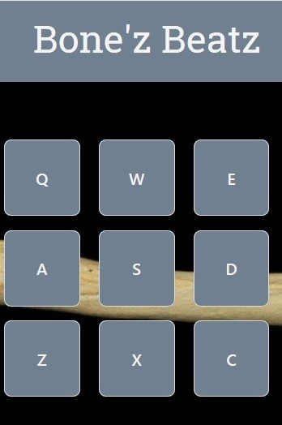
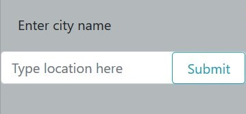
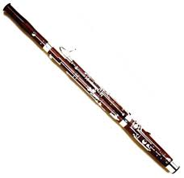

Bone's BeatzA cusomizable sound board where the user assigns sound effects to buttons on a virtual keyboard, and plays them back by clicking the corresponding button on their physical keyboard. Includes a recording functionality, a random Kanye West quote generator, song lyric finder, and a text-to-speech functionality.
Monty Python QuizA five question, multiple choice quiz inspired by Monty Python: the Quest for the Holy Grail. The question order and answer order will be randomized each try, there is a countdown timer that loses 15 seconds when the wrong answer is selected. Once the time runs out there is a dynamically displayed failure messege. Upon successful completion the user is prompted to enter their initials which are stored to local storage and displayed in a high-scores chart. The entire app is accomponied by music and sound effects from the movie.

Weather AppAn application for finding the weather in cities around the world. The user is prompted to enter the city they want to see the weather for, and upon submitting the current, as well as a five day forecast is displayed. Past searches are stored in local storage, up to 5, and buttons are dynamically added to the display that reflect past searches.

Bassoon StuffNot strictly development, this section contains links to my musician life: my YouTube page, my musician website, etc.